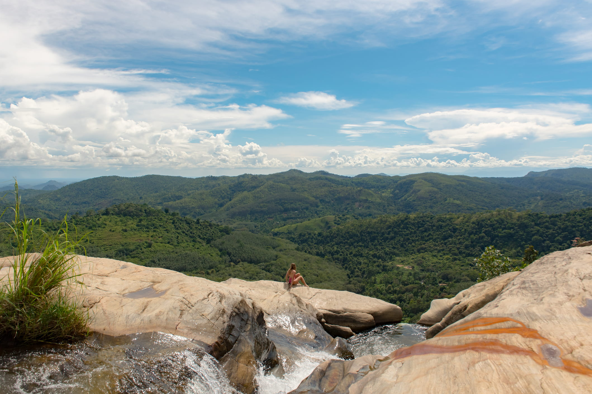
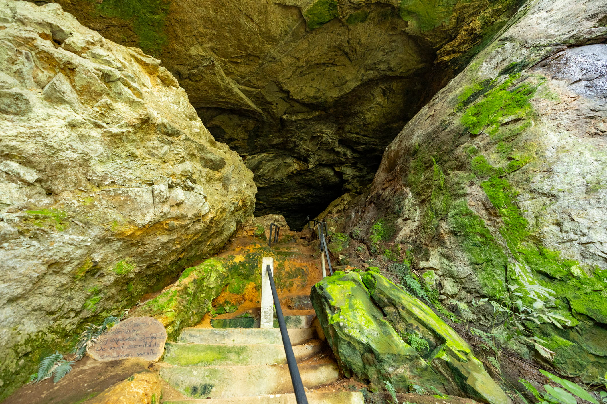
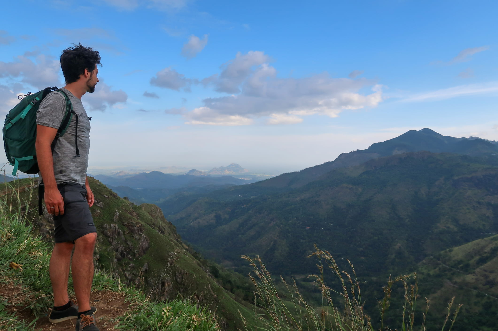
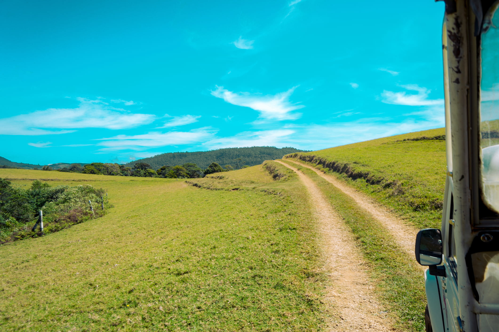
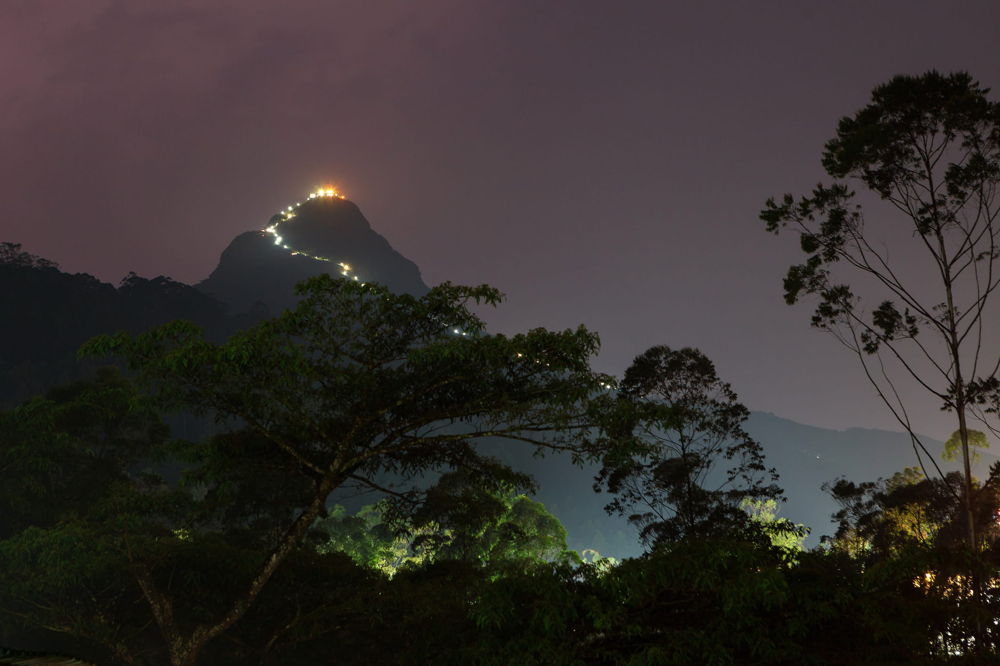
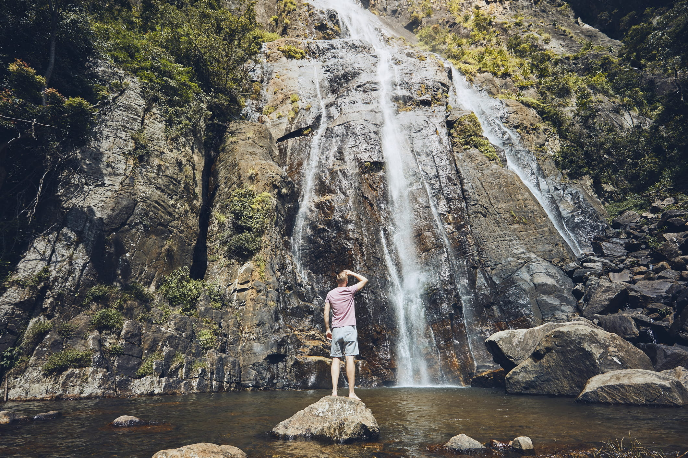
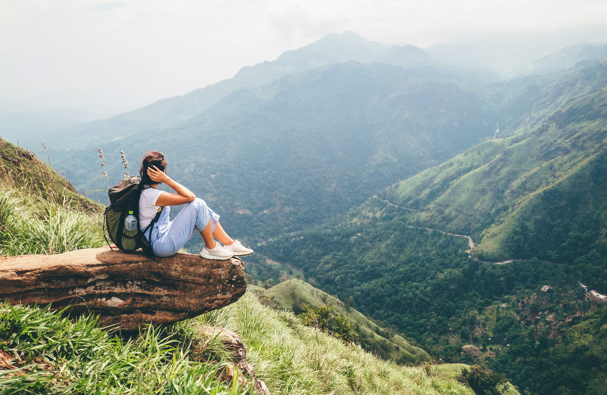

"Peak Explorer" package is an adventure tour through Sri Lanka's central highlands. It combines an Udawalawe elephant safari with thrilling activities like the Ravana Zipline and a challenging hike up Diyaluma waterfall. The tour also features treks to scenic viewpoints at World's End and Moon Plains, with relaxation at Gregory Lake. For the ultimate challenge, a seasonal pilgrimage up Adam's Peak is available as an optional addition.
As a premier wildlife sanctuary, Udawalawe National Park is Sri Lanka's most reliable destination for observing large herds of wild Asian elephants in their natural grassland habitat surrounding a vast reservoir.
Steeped in the Ramayana legend, Ravana Cave is a historic site near Ella, reached via a strenuous climb of several hundred steps to see where King Ravana is said to have hidden Princess Sita.

Feel the thrill of flight on the Flying Ravana, a high-speed zipline that soars over the breathtaking tea estates and green valleys of Ella.

Little Adam's Peak is an accessible and relatively easy hike in Ella that rewards you with stunning panoramic views of the Ella Gap and surrounding green hills after a short walk through lush tea estates. You can make it more enjoyable by taking a walk on the Sky Walk.
The Ella Rock hike is a challenging but rewarding trek that takes you along scenic railway tracks and up a steep climb to a summit with spectacular panoramic views over the Ella Gap.
Nil Diya Pokuna (which translates to "Pond of Clear Blue Water") is a hidden underground cave system located in Karandagolla, near Ella. It is famous for its stunning, crystal-clear blue subterranean pond.
This adventurous challenge involves hiking to the top of Diyaluma, Sri Lanka's second-highest waterfall, to swim in a series of breathtaking natural infinity pools at the cliff's edge.

Found at the end of a scenic hike through Horton Plains National Park, World's End is a breathtaking sheer cliff with a dramatic drop of nearly 900 meters, reaching the Baker's Falls, offering vast panoramic views that are best seen in the early morning.

Located in the heart of Nuwara Eliya, Gregory Lake is a scenic recreational hub offering a variety of water activities, from leisurely swan-shaped paddle boats and boat tours to more thrilling jet ski rides.
As Sri Lanka's tallest waterfall, Bambarakanda plunges a breathtaking 263 meters down a sheer cliff face in the heart of the hill country.
Revered by multiple religions as a holy site, Adam's Peak is famous for its challenging, seasonal night-time pilgrimage up thousands of steps to witness the sacred footprint and a spectacular sunrise from its summit.